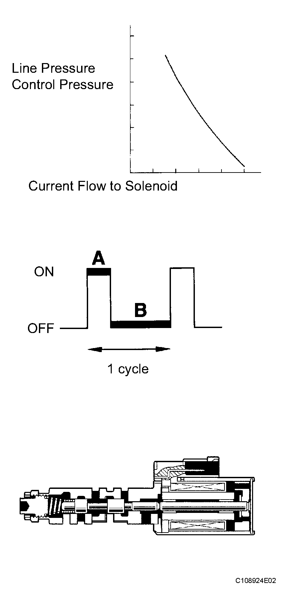

DTC P2716 Pressure Control Solenoid "D" Electrical (Shift Solenoid Valve SLT): Description

Courtesy of © TOYOTA, LICENSE AGREEMENT TMS1002The throttle pressure that is applied to the primary regulator valve (which modulates the line pressure) causes the solenoid valve SLT, under electronic control, to precisely modulate and generate the line pressure according to the extent that the accelerator pedal is depressed or the output of engine power. This controls the line pressure and provides smooth shifting characteristics.
Upon receiving a signal of the throttle valve opening angle, the ECM controls the line pressure by sending a predetermined duty ratio* to the solenoid valve, modulating the line pressure and generating throttle pressure.
HINT:
*: The duty ratio is the ratio of the current ON time (A) to the total of the current ON and OFF time (A + B). Duty Ratio (%) = A / (A + B) x 100
| DTC No. | DTC Detection Condition | Trouble Area |
|---|---|---|
| P2716 | Condition (a) or (b) below is detected for 1 sec. or more (1 trip detection logic):
|
|